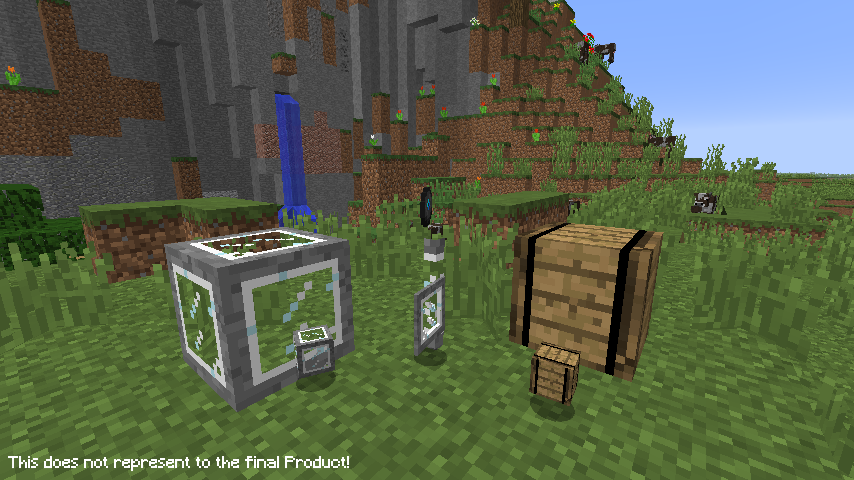

Minecraft Extension 1.12 brings you an Alternative Experience for Minecraft.
Its add a lot of new Content, while keeping the artstyle of Minecraft.
FEAUTURES
New Block Types!
Use the new Blocks to create a nice house or a entire Kingdom! The Ideas is endless!

Return of the old PVP Mechanic!
Say goodbye to the crap 1.9 PVP Update and say Hello to the old PVP Mechanics! :D
Extended Village Features!
Lets give the old Village a fresh look with new Houses, new Decorations and so much more...
No Chat Report!
Say no more with Chat Report with our upcoming 1.12_01 optimized Server!
And so much more!
There are lot more Features in the Build, so keep look a eye on it!